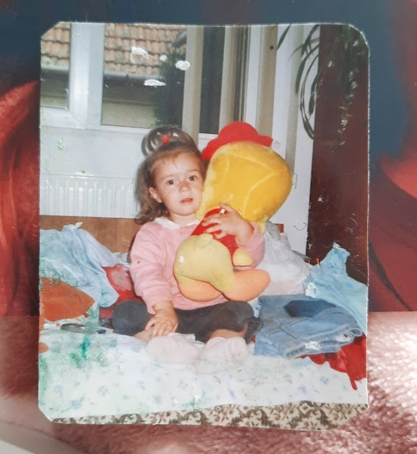
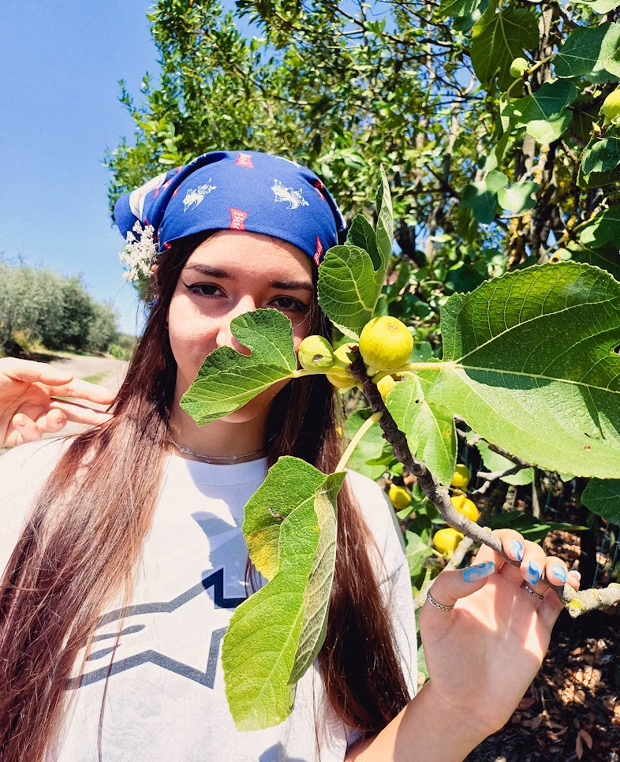

About me
Hi! I'm Alisa Bîcleșanu.
I was born in Timișoara, in 2004. I grew up in Brașov, Transylvania.
I'm a person who likes both the logical and artistic aspects of life. I spend my time making robots, programming, painting and making sculptures.
I consider myself a sport's person as well. With the exception of the pandemic, I never stopped practicing sports. My favorite aspects of doing sports are being part of a group and observing my progress.
One of my core memories is my first math class, learning addition and subtraction. Since then, I kept looking for math in the world around me. This set me on the course towards programming and robotics, two subjects that became really important in my life. Art classes were my favorite moment of the day. Art became a part of me and I spent a lot of my time perfecting my skills, in order to show my thoughts and emotions accurately. I started canvas painting, making sculptures, making clay figurines and handmade jewelry. I always worked until I felt satisfied with the results. I grew up spending my time learning about art, including photography, sculpture, fashion and music.
My ideal future involves happiness, gratefulness, peace and a close relationship with my family. I see myself either as a developer/both a developer and a mechanic in the robotics field or a developer in any field that has to do with making the world a better place and helping humanity evolve. I wish for my free time to be occupied by art. I want to find my style of art and create as many pieces as possible. I might even combine art and programming. I feel like I will never quit studying and learning, no matter the topic. In brief, I want to become the best version of myself.


My academic journey
In middle school I was curious about math, physics, history, geography, art and Romanian language class. I spent time working for these subjects, out of pure enjoyment. I participated at the math, physics and English Olympics.
In high school I discovered I really like my computer science class as well. I started learning to code in my free time. I often tell my friends that I find coding and painting very similar: you need a vision of what the project is going to look like in the end, layers, patience, room for improvement. Yet the biggest similarity is how much freedom of expression they both give. I was part of the ACSL project, an international coding competition. I participated at the English Olympics, an English creative writing competition, Romanian language Olympics and other Romanian language competitions. Unfortunately, these all happened in 9th grade, right before the pandemic started, and future stages of these competitions were canceled. In 11th grade, when we physically returned to school, I participated in the English Olympics and in robotics competitions.
In every sports competition, school contest, school project or personal project, I try to exceed my own limits and become a better and wiser human. That's why I would rather earn last place while being proud of my work and achievements than earn first place without any effort.